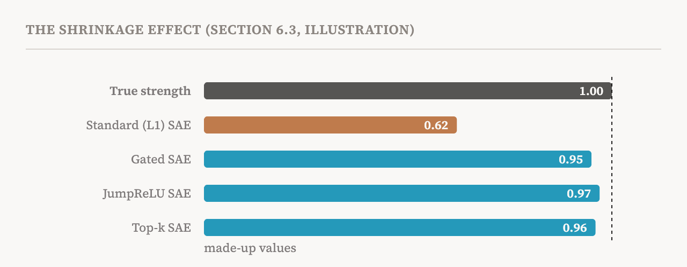
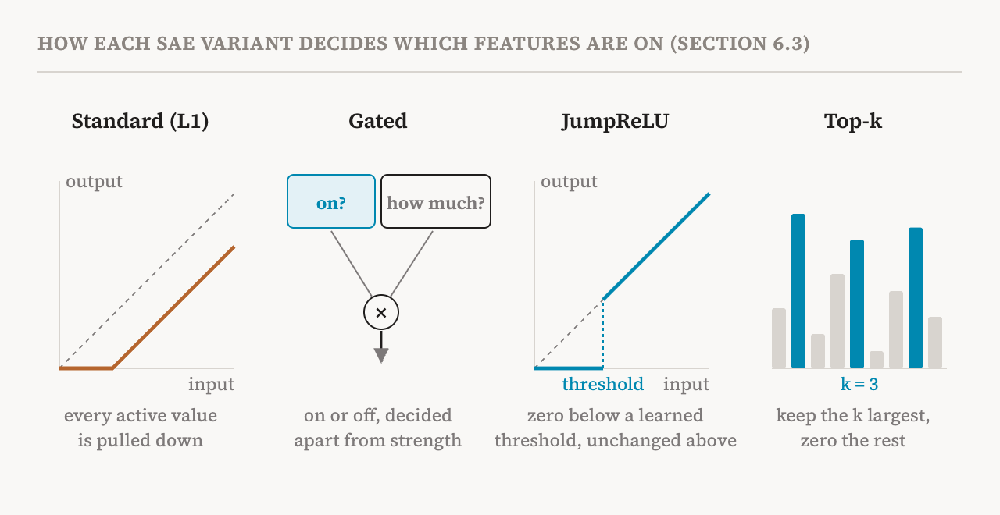

Part 10 introduced the standard sparse autoencoder: an encoder that turns an activation into a few active features, a decoder that rebuilds it, and an L1 penalty that keeps the features sparse. This part covers sections 6.3 and 6.4 of the book (pages 34–37). They describe the main improvements on that design and then give practical advice on which version to use when. The advice is useful, and so is the book's honesty about how little of it is settled.
The shrinkage problem
The book names one main reason to move beyond the standard SAE. Its L1 penalty charges for the size of every active feature. That is how it pushes unneeded features to zero, but it also charges for the features that should be on. So during training the SAE learns to report every feature as weaker than it really is, because a smaller value costs less. A feature can be clearly present and still be reported with a low activation. This is called the shrinkage effect.

Shrinkage matters because interpretability relies on these numbers. If feature strengths are systematically biased downwards, both the reconstruction and any conclusion drawn from how strongly a feature fired are off. The variants below attack the problem in different ways.
Gated SAEs
The idea of a gated SAE is to separate two decisions that the standard SAE makes at once: whether a feature is on, and how strong it is. It has two paths. A gating path decides, for each feature, on or off. A magnitude path estimates how strong each feature is. The output is the magnitude, multiplied by zero or one from the gate. Because the penalty that drives sparsity acts on the gating decision rather than directly on the reported strength, the magnitudes are no longer pulled down.
JumpReLU SAEs
A JumpReLU SAE gives every feature its own learned threshold. If the encoder's value for a feature is above the threshold, the value passes through unchanged; if it is below, the feature is set to zero. Drawn as a curve, the activation jumps from zero straight to the threshold value, hence the name.
There is a technical difficulty: a jump has no useful slope, so ordinary training by gradient descent cannot learn where to put the thresholds. JumpReLU SAEs get round this with straight-through estimators, a standard trick that substitutes an approximate slope during training so that learning can proceed.
Top-k and Batch Top-k SAEs
Top-k SAEs take the bluntest route. For each input, they keep only the k features with the largest encoder values and set all others to zero. The number of active features is then never more than k, which is a direct limit on the count rather than a penalty that only encourages it. And because nothing charges for size, there is no shrinkage.
Batch Top-k SAEs relax this. Instead of exactly k active features for every input, they keep the largest values across a whole batch of inputs, k per input on average. A complex input can then use more features and a simple one fewer, which lets the SAE spend its capacity where it is needed. At use time, after training, a batch-level rule would make one input's features depend on the others in its batch, so these SAEs switch to a JumpReLU-style threshold estimated during training.

Trade-offs
The book sums up the differences in a small table, which the table below follows. No variant is best in every situation.
| Variant | How sparsity is enforced | What needs tuning |
|---|---|---|
| Standard (L1) | A soft penalty on the size of activations | The penalty strength λ |
| Gated | A learned on/off decision, separate from strength | λ; the gate is trained with extra losses |
| JumpReLU | A learned threshold per feature | λ, the training trick's settings, and the starting thresholds |
| Top-k | Keep exactly the k largest | k |
| Batch Top-k | Keep the largest k per input on average, across a batch | k |
The book also points readers to ready-made SAEs. Researchers have published trained SAEs for several open models, such as Gemma Scope for the Gemma 2 models and Llama Scope for Llama-3.1-8B, and these can be explored on open platforms such as Neuronpedia, where each feature has a page showing the texts it fires on.
Choosing a variant
Section 6.4 turns to the practical question of which SAE to use, and organises the answer around four factors.
The first is the goal of the analysis. Exploratory discovery, asking what features exist at all, is what SAEs were designed for. For a targeted investigation of a behaviour already identified, where the concept of interest is known in advance, supervised methods such as linear probes or a method called distributed alignment search are more direct instruments (part 14 compares them). For monitoring a deployed model, SAEs with small dictionaries can be preferable because they are cheap to run.
The second is where in the model the SAE is applied. On the residual stream, ordinary single-layer SAEs apply directly. On MLP outputs, the book recommends transcoders, which learn the MLP's input-to-output map rather than a static activation (part 13). On attention outputs, standard and gated SAEs have both been used, but this is the least studied of the three places. For analysis across layers, there are crosscoders and cross-layer transcoders, at much higher cost.
| Where | Variants used | Reported reasoning | Reported caveats |
|---|---|---|---|
| Residual stream, early layers | Gated, Top-k | Close to the input embeddings; moderate sparsity | Smaller expansion factors (2–4×) reported |
| Residual stream, middle layers | Gated, JumpReLU | Richest feature structure; best prospects for interpretation | Standard expansion factors (4–8×); the most studied setting |
| Residual stream, late layers | Top-k, Gated | Increasingly specific to the task; may be less sparse | Larger expansion factors (8–16×) reported |
| MLP outputs | Transcoders | An SAE on one layer cannot span the MLP's nonlinearity | Not a decomposition of a fixed activation |
| Attention outputs | Gated, standard | Attention outputs are often lower-rank | Least studied; may suit smaller dictionaries |
| Across layers | Crosscoders, cross-layer transcoders | Tracks features as they change; resolves superposition across layers | High compute cost; needs training on many layers |
The third factor is the size of the model. Models of one or two billion parameters, such as Gemma-2-2B, are mainly used to validate methods before scaling, and there the differences between variants depend heavily on which metric is used. For models between one and ten billion parameters, JumpReLU and Top-k are the most common choices: Gemma Scope uses the former and Llama Scope the latter. For models above ten billion parameters, the main open resources are Gemma Scope and Gemma Scope 2, both built with JumpReLU. OpenAI researchers have also scaled Top-k SAEs to GPT-4, though that model is not publicly available.
The fourth is resources. With little compute, or when fast iteration matters more than perfect reconstruction, Top-k is the practical choice: fixing the number of active features removes the penalty strength from the settings to search, and reported values of k are commonly between 32 and 150. With moderate capacity for tuning, gated SAEs achieved a better balance between reconstruction and sparsity. With extensive tuning, JumpReLU SAEs achieved the best reconstruction at a given level of sparsity.
The caveats
Here the book is unusually candid. Better scores on reconstruction and sparsity, the standard proxy metrics, do not reliably translate into better performance on the tasks people actually care about, according to a 2025 benchmark called SAEBench. Comparisons against the standard L1 SAE, which is now mostly used as a baseline, partly measure shrinkage rather than the quality of the dictionary. And finding the best model and settings can take a great deal of time.
The book adds a list of conditions that limit how general any of these findings are.
| Condition | What it means |
|---|---|
| Architecture | Most evidence comes from Llama and Gemma models; other families are untested |
| Task | What matters may differ between safety audits, understanding behaviour and locating knowledge, but evaluations rarely separate them |
| Pace | New designs appear faster than old ones are studied and replicated |
| Theory | The findings are mostly empirical; why a variant succeeds or fails is poorly understood |
| Reproducibility | SAEs trained with different random seeds can find substantially different features, so small differences between variants may be noise |
The last row deserves emphasis. If two training runs of the same variant differ more than two different variants do, a reported advantage cannot be credited to the design. The book notes that few published comparisons account for this. Its advice is to treat the findings as references, not established rules.
| Term | Meaning |
|---|---|
| Shrinkage | The L1 penalty's tendency to make an SAE report features as weaker than they are |
| Gated SAE | An SAE with separate paths for whether a feature is on and how strong it is |
| JumpReLU | An activation that is zero below a learned threshold and passes values above it unchanged |
| Straight-through estimator | A training trick that substitutes an approximate slope where the true one is useless |
| Top-k SAE | An SAE that keeps only the k largest feature activations for each input |
| Batch Top-k SAE | An SAE that keeps the largest activations across a batch, k per input on average |
| Proxy metric | A score that is easy to measure and hoped to track what we really care about |
| SAEBench | A 2025 benchmark for comparing sparse autoencoders on many measures |
| Gemma Scope, Llama Scope | Published collections of trained SAEs for open models |
| Neuronpedia | An open website for browsing features and the texts that activate them |
Next, part 12 looks at how sparse autoencoders fail: dead, duplicated, absorbed and unstable features, and the deeper question of whether the features they find are the real ones.